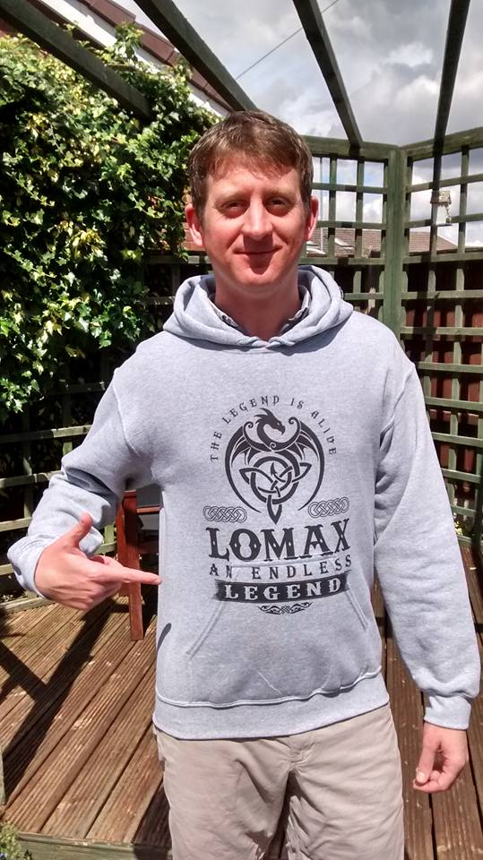

Making my first webpage on the way to becoming a junior dev!

Qualities
enthusiastic
effective communicator
willing and quick to learn
Hobbies & Interests
hiking
boardgames
rugby league COYS four-peat!
About me
Qualified English as a Foreign Language Teacher with 10 years' experience teaching in China, Japan, Saudia Arabia and the UK.
Started learning to code with Manchester Codes in January 2022.
My goal is to maximise my learning potential during the course, in order to be successful in making a career change as a Junior Developer.
Celeb Spotting #3. Celebrating with Ali Al-Habsi after he won the final of the 2017-18 Saudi Professional League with Al Hilal SFC. King Fahd International Stadium, Riyadh, Saudi Arabia - 12/04/2018.
Celeb spotting #2. Chatting with Sven-Göran Eriksson during a training session with Guangzhou R&F F.C. shortly after he had taken over as head coach. Sven saw us watching and came over to talk to us, a class act, really nice guy. Huizhou Olympic Stadium, Huizhou, China - 13/06/2013.
Celeb Spotting #1. Meeting Alan Shearer in WHSmith, he is clearly distracted by the queue of fans with cameras forming ahead. Manchester Airport, UK - 26/03/2012.